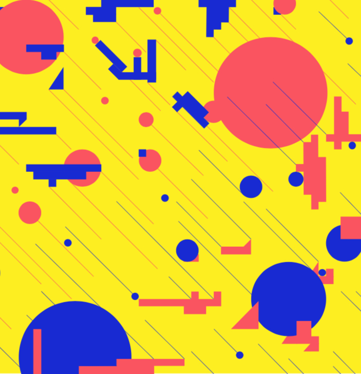

Утро было душным. И погодные условия кабинета, где собирались все фрешмены, были не лучше. Многие улыбаются, радуются новым знакомствам, грядущей мясорубке учебе, свободе.Забавно было посмотреть на всю группу. Все выглядели разными, не соответствующими друг другу, может кто-то чуть-чуть потерянным, а другой более уверенным, но интро самих себя сблизило всех в моих глазах: знают куда и зачем пришли(по словам точно), а главное - дико заинтересованы.
Дико круто! Люблю эти воодушевляющие речи. Сейчас(пишу я это в конце модуля) думаю, что они задали атмосферу в группе и тон рабочей этики как минимум на первый модуль. Было интересно поговорить с Захаром, узнать,кто нас будет направлять и чего нам ждать.
Ой, да! Еще же мы траве сидели, запоминали имена друг друга. Солнце теплым оранжевым покрывало нашу полянку, и улыбки от этого становились еще более улыбчивыми и знакомыми. В маке потом картошку поели, тоже неплохо.

История искусств - двоякий предмет. И веселый, и сонный. За две пары можно успеть все: от посмеяться над мемчиками преподавателя до сладко подремать.
Познакомились с Евгенией (преподаватель по кп) и Светой (по технологии). Очень странное ощущение при осваивании иллюстратора, вот это ужасная детская беспомощность. Не только не понятно как что-то сделать, но и вообще, что делать с нулевыми средствами. Но появляется огромное желание что-то сделать, научиться, пересмотреть все туториал на ютубчике.
